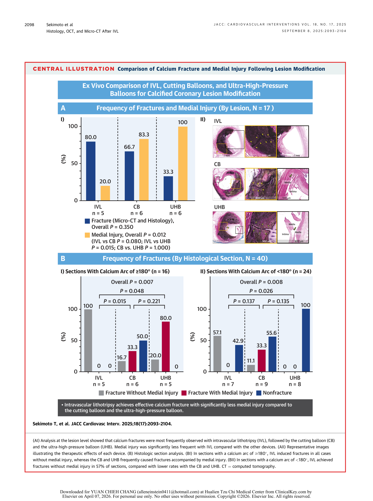

| 指標 | IVL | RA | ELCA | 來源 |
|---|---|---|---|---|
| ROLLER COASTR-EPIC22 RCT (N=171, 57/arm) | ||||
| Stent expansion (OCT, ITT) | 85.6 ± 13.3% | 86.4 ± 14.1% | 80.3 ± 13.3% | [CARD-013] 🔴 RCT |
| IVL vs RA noninferiority | 差值 −0.8%（95% CI: −6.5 至 4.8）→ IVL noninferior | [CARD-013] | ||
| MSA (mm2) | 5.36 ± 1.78 | 5.53 ± 2.1 | 5.1 ± 1.83 | [CARD-013] |
| Perforation | 0 (0%) | 2 (3.5%) | 2 (3.5%) | [CARD-013] |
| Slow flow / no reflow | 0 (0%) | 1 (1.7%) | 1 (1.7%) | [CARD-013] |
| Severe procedural complications | 0 (0%) | 2 (3.5%) | 2 (3.5%) | [CARD-013] |
| Dissection (any) | 4 (7.0%) | 1 (1.7%) | 3 (5.2%) | [CARD-013] |
| Flow-limiting dissection | 0 (0%) | 0 (0%) | 0 (0%) | [CARD-013] |
| Meta-analysis (14 studies; IVL 2,056 vs RA 3,099) | ||||
| MACE (OR, IVL vs RA) | OR 0.81（95% CI: 0.57-1.16）→ NS | [CARD-014] 🟠 Meta-analysis | ||
| Coronary perforation (OR) | OR 0.43（0.32-0.57），P < 0.001 → favors IVL | [CARD-014] | ||
| Slow/no-reflow (OR) | OR 0.34（0.14-0.79），P = 0.02 → favors IVL | [CARD-014] | ||
| Procedure time (SMD) | SMD −0.30（−0.61 至 0.00），P = 0.05 → IVL 較短 | [CARD-014] | ||
| Fluoroscopy time (SMD) | SMD −0.41（−0.62 至 −0.20），P = 0.004 → IVL 較短 | [CARD-014] | ||
| Post-procedural MSA | 兩組 comparable（NS） | [CARD-014] | ||
| Cadaveric Study (6 hearts, 17 lesions; IVL vs CB vs UHB) | ||||
| Calcium fracture (micro-CT + histology) | 80% | CB 66.7% / UHB 33.3% | [CARD-017] 🟠 Preclinical | |
| Medial injury | 20% | CB 83.3% / UHB 100%（P = 0.012） | [CARD-017] | |
ROLLER COASTR-EPIC22 是首個以隨機對照設計直接比較 rotational atherectomy（RA）、 intravascular lithotripsy（IVL）與 excimer laser coronary atherectomy（ELCA）的臨床試驗[CARD-013] 🔴 RCT。 此試驗於西班牙 8 所高介入量中心進行，納入 171 名中重度血管攝影鈣化患者（57 人/組）， 以 OCT 測量之 stent expansion 為主要療效指標（noninferiority margin −7%）[CARD-013]。 結果顯示 IVL 組的 stent expansion 為 85.6%，與 RA 組的 86.4% 比較差值僅 −0.8%（95% CI: −6.5 至 4.8）， 達到 noninferiority 標準[CARD-013]。
在安全性方面，IVL 組的表現數值上最佳： perforation 0 例（vs RA 2 例 [3.5%]、ELCA 2 例 [3.5%]）、 slow flow/no reflow 0 例（vs RA 1 例 [1.7%]、ELCA 1 例 [1.7%]）、 severe procedural complications 0 例（vs RA 及 ELCA 各 2 例 [3.5%]）[CARD-013]。 值得注意的是，IVL 組的 dissection 發生率數字上較高（4 例 [7.0%]）， 但均屬 Type A/B/D，且 flow-limiting dissection 三組皆為 0%[CARD-013]。 這些 non-flow-limiting dissections 可能反映 IVL 產生更多 multiple calcium fractures 的特性 （IVL 45.5% vs RA 11.8%，P = 0.02）， 且 IVL 組術後需要較少的 postdilatation（63.1% vs RA 91.2%，P = 0.001）[CARD-013]。 總體而言，在相似的 efficacy 下，IVL 的嚴重程序併發症率最低。
一項納入 14 篇研究（2 篇 RCT + 12 篇觀察性研究）、涵蓋 IVL 2,056 例與 RA 3,099 例的 systematic review and meta-analysis 提供了更大規模的量化比較[CARD-014] 🟠 Meta-analysis。 在整體臨床預後方面，MACE 無顯著差異（OR 0.81，95% CI: 0.57-1.16）， 表示兩種技術的臨床效能 comparable[CARD-014]。 然而在程序安全性方面，IVL 展現明顯優勢： coronary perforation 風險 IVL 顯著較低（OR 0.43，95% CI: 0.32-0.57，P < 0.001）， 亦即 RA 的 perforation 風險約為 IVL 的 2.3 倍[CARD-014]。 Slow flow/no reflow 同樣 favor IVL（OR 0.34，95% CI: 0.14-0.79，P = 0.02）[CARD-014]。 此外，IVL 組的操作時間（SMD −0.30，P = 0.05）與透視時間（SMD −0.41，P = 0.004） 均短於 RA 組，提示 IVL 在技術操作上較為簡便[CARD-014]。 術後 MSA 兩組 comparable[CARD-014]。 須注意本 meta-analysis 中 12 篇為觀察性研究，存在選擇偏誤風險—— RA 組可能納入了更嚴重的鈣化病灶[CARD-014]。
臨床數據所觀察到的 IVL 安全性優勢，可從組織病理學層面找到機轉解釋。 CVPath Institute 的 cadaveric study 使用 6 具屍體心臟中 17 處鈣化病灶（40 個組織切面）， 直接比較 IVL（Shockwave C2+）、cutting balloon（CB, Wolverine）與 ultra-high-pressure balloon（UHB, OPN NC）對血管壁的損傷程度[CARD-017] 🟠 Preclinical/Cadaveric。 三種器械在 calcium fracture 頻率上無統計差異（IVL 80% vs CB 66.7% vs UHB 33.3%，P = 0.350）， fracture depth 亦無顯著差異（IVL 659 μm vs CB 377 μm vs UHB 708 μm，P = 0.149）[CARD-017]。 然而 medial injury 率呈現顯著差別： IVL 僅 20%，CB 高達 83.3%，UHB 為 100%（P = 0.012；IVL vs UHB P = 0.015）[CARD-017]。
在 calcium arc ≥180° 的 concentric calcification 切面中，差異更為戲劇化： IVL 達到 100% calcium fracture 且 0% medial injury， 反觀 CB 僅 16.7% 的 fracture 不伴隨 medial injury， UHB 僅 20%（P = 0.007）[CARD-017]。 此差異根植於物理機轉的本質不同： IVL 以低壓（4 atm）充氣下發射 circumferential acoustic pressure waves， 聲波在鈣化與軟組織的聲阻抗界面上選擇性作用，不透過機械支點傳力[CARD-017]。 相對地，CB 依賴刃邊（blade）嵌入鈣化形成 fulcrum effect， UHB 則以高達 34 atm 的純機械壓力施於血管壁—— 兩者的支點效應（fulcrum effect）在破裂鈣化的同時， 不可避免地將剪切力傳遞至下方的 media 層，導致 medial injury[CARD-017]。 此外，UHB 的 fracture 僅在較大 calcium arc 時才會發生（P = 0.003）， 而 IVL 的 fracture 效果不受 calcium arc 大小限制[CARD-017]。 這項 cadaveric 證據為 IVL 在臨床上較低的 perforation 與 vascular complication 率 提供了組織病理學基礎的機轉解釋。
